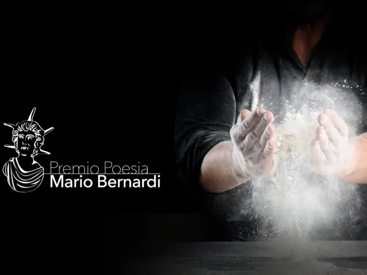

da dom 4 ott a dom 11 ott
Settimana della Poesia - XI edizione
Il Premio di Poesia “Mario Bernardi” è stato istituito per onorare la memoria dello scrittore e poeta opitergino Mario Bernardi, scomparso nel luglio 2015. Il comitato scientifico, come previsto dal regolamento, ha scelto “Lavoro” come tema dell’XI edizione.
 Indicazioni
Indicazioni
- Costi e prenotazioni
- Costo non indicato · Prenotazione non indicata
- Programma
- Programma da verificare. Apri la fonte ufficiale per orari e possibili aggiornamenti.
- In caso di maltempo
- Nessuna indicazione specifica pubblicata.
- Note
- Acquisito automaticamente dalla fonte.
L’EVENTO
Descrizione completa
Il Premio di Poesia “Mario Bernardi” è stato istituito per onorare la memoria dello scrittore e poeta opitergino Mario Bernardi, scomparso nel luglio 2015. Il comitato scientifico, come previsto dal regolamento, ha scelto “Lavoro” come tema dell’XI edizione.
Una settimana ricca di appuntamenti dedicati alla poesia, alla letteratura e alla musica, che prenderà il via domenica 4 ottobre con la cerimonia di premiazione della sezione Junior “ Tra Peressina e Ottoboni ”, riservata agli studenti degli Istituti Comprensivi di Oderzo, Salgareda, Ormelle, San Polo di Piave e Ponte di Piave.
Mercoledì 7 ottobre, nella Sala delle Anfore del Museo Archeologico “Eno Bellis”, sarà presentato il libro Appunti Poetici di Isabel Miotto, con accompagnamento musicale di Alessandro Omicciuolo. Giovedì 8 ottobre sarà la volta di A Tavola con la Poesia , serata organizzata in collaborazione con l’Associazione Amiche per la Pelle APS: una cena di beneficenza al ristorante Nuovo Ranch, tra poesie, letture, musica e convivialità.
Venerdì 9 ottobre, ancora al Museo Archeologico, sarà presentato Opera Operaia. 43 anni di fabbrica e 40 di poesia di Fabio Franzin. Sabato 10 ottobre, nella Chiesa di San Polo di Piave , è previsto il concerto del Coro ANA di Oderzo.
La settimana si concluderà, come da tradizione, domenica 11 ottobre a Palazzo Foscolo con la cerimonia finale dell’XI Premio Internazionale di Poesia “Mario Bernardi”, dedicato agli adulti e agli studenti degli Istituti Superiori del Triveneto, con sezioni in lingua italiana e nelle parlate del Triveneto.
Una settimana per vivere la poesia in tutte le sue forme, tra parole, musica, cultura e momenti di condivisione.
IL PROGRAMMA
Programma e orari
Appuntamenti raccolti dalle fonti elencate. Dove manca un orario, non è ancora disponibile in questa scheda.
Programma pubblicato
- 2026-10-04 — 2026-10-04 · 15:00:00
- 2026-10-07 — 2026-10-07 · 20:30:00
- 2026-10-08 — 2026-10-08 · 19:30:00
- 2026-10-09 — 2026-10-09 · 20:30:00
- 2026-10-10 — 2026-10-10 · 20:30:00
- 2026-10-11 — 2026-10-11 · 15:30:00
INFORMAZIONI UTILI
Prima di partire
- Controllare la fonte prima di partire.
ORGANIZZAZIONE